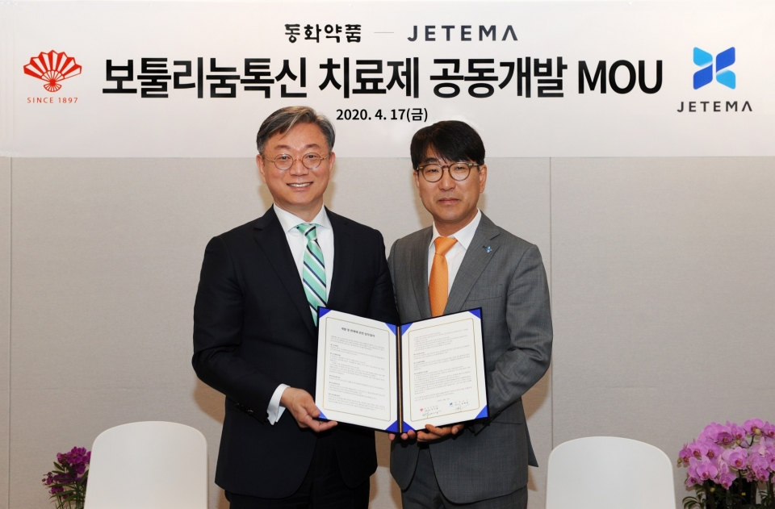

home > R&D > 연구성과
연구성과
DongHwa 同和
연구성과 연혁
1973 - PRESENT
기술 - 1973
-
02
중앙연구소 발족
- 1985
-
05
중앙연구소 연구동 준공 , 동결건조 주사제 세프메타존주 제품화
- 1994
-
01
IR52 장영실상 수상(암브록솔 개발 성공), 소염진통제 록소닌정 제품화
- 2001
-
09
세계최초 방사성 간암 치료제 "밀리칸주" 신약개발 성공
- 2002
-
04
한국 신약개발 대상 수상
- 2003
-
07
동암약의상 수상(신약개발부문)
- 2004
-
06
판토프라졸(위,십이지장궤양 치료제) 합성 성공
- 2007
-
02
퀴놀론계항균제(DW224a) 기술이전 (미국 Pacific Beach Biosciences)
- 2008
-
11
골다공증 치료제(DW1350) 기술이전 (일본 Teijin)
- 2014
-
03
클자핀 국내 발매 (단독 국산화)
- 2015
-
12
자보란테 보건복지부 보건신기술(NET) 인증
- 2016
-
08
'자보란테' 중동 및 북아프리카 12개국 라이선스 및 공급계약 체결
- 2017
-
05
'자보란테' 중국 라이선스 및 공급(판매) 계약 체결
- 2018
-
07
'자보란테' 대한민국신약개발 대상 수상
- 2022
-
03
국내 최초 인지기능 개선 프로바이오틱스(DW2009) 개별인정형 기능성 원료 승인 획득